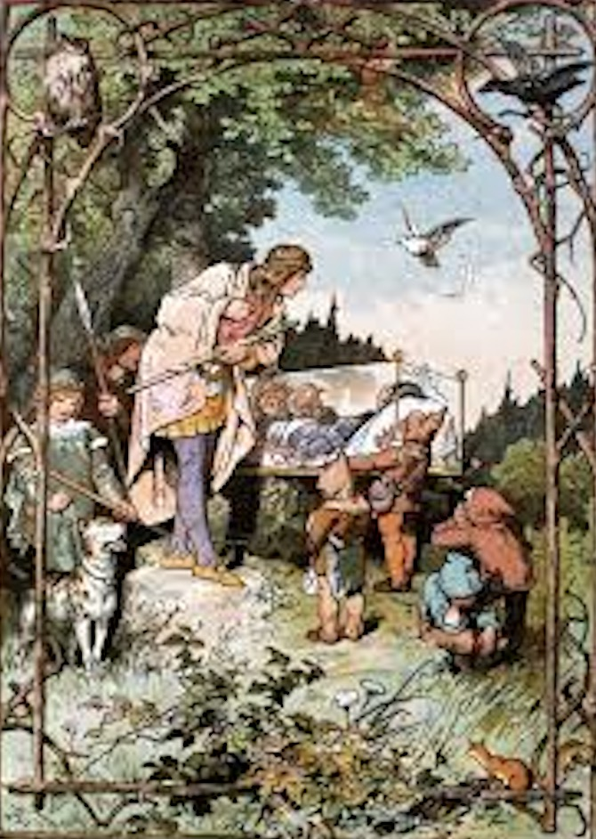
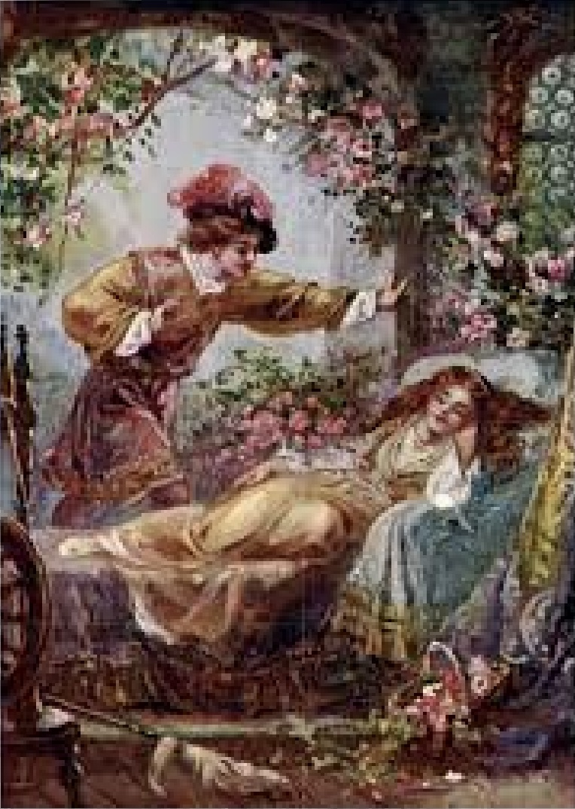

Cinderella: The Cinderella story children know and love, that includes a fairy godmother and a glass slipper differs somewhat from the original Brothers Grimm version, but both teach that through kindness and perseverence, dreams come true.In the Brothers Grimm story, Cinderella lives with her wicked stepmother and step-sisters and wants to attend a three-day, royal festival. Cinderella's bird friends provide her with a dress to wear and she makes her way to the festival. She meets a prince, who is enchanted by Cinderella, but on each of the three festival nights, Cinderella escapes his grasp. On the third night, she leaves behind her shoe and the prince sets out to find the woman whose foot fits the shoe. Finally, when Cinderella tries on the shoe, which fits, and she marries the prince.
Snow White: This story tells of an evil queen jealous of her step-daughter's (Snow White) beauty. To remain the most beautiful woman in the kingdom, the queen banishes Snow White to the woods and instructs a huntsman to kill her. However, the huntsman takes pity on Snow White and spares her life. Left alone in the woods, Snow White discovers a cottage where seven dwarfs live. They strike a bargain that Snow White can live with the dwarfs as long as she takes care of them. The story teaches that inner beauty always triumphs over outward beauty.
Little Briar Rose (Sleeping Beauty): A story of true love conquering all, a baby princess named Briar Rose is cursed by an angry witch and destined to prick her finger on a spinning wheel and die at fifteen. Another 'Wise Woman' changes the curse so that the princess will not die, but fall into a deep sleep for 100 years. Despite attempts to prevent the curse from taking place, Briar Rose pricks her finger and she and the inhabitants of the castle fall asleep. The castle is overrun by a thorny hedge that many Kings attempt to get through to no avail. After 100 years, a prince makes his way through the hedge, which has turned into flowers, and kisses the sleeping Briar Rose. The curse is broken and Briar Rose and the people of the castle wake up.